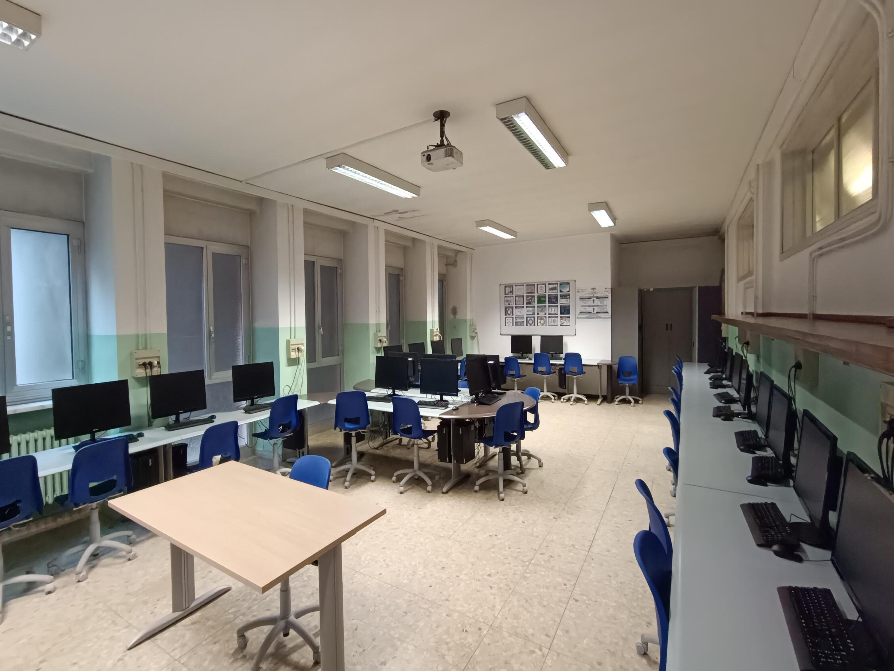

.jpg)
biotechnology laboratory

chemistry lab
The address in Computer Science and Telecommunications is for students who wish to acquire skills in computer systems, information processing, networks and communication equipment. The address includes two articulations, "Computer Science" and "Telecommunications."
The expert for Computer Science has skills in the analysis development of programs, libraries or low-level components; knows how to work with major operating systems and network protocols; is able to design, implement, test and maintain databases; has the preparation to create customized websites and services consisting of static or dynamic pages, through the mastery acquired in the use of web-oriented languages. He finds employment in software houses, companies developing websites for advertising and electronic commerce, data processing centers of large and medium-sized companies, companies providing network installation and management services, commercial centers for sales support of new technologies.
The expert in Computer Science with Telecommunications articulation operates and collaborates in the analysis, design, installation, configuration and maintenance of telecommunications networks, local and geographic, characterized by fixed and mobile infrastructure, particularly for hardware issues; applies knowledge of transmission media, protocols and devices for communication to define the use according to the appropriate topology and the requirements expressed by users. Finds employment in network installation and support companies, fixed and mobile telephone companies, and pointing system (gps) design and construction companies.